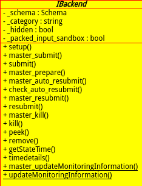

一、中子散射产生的反冲核均为裸核。即带电量是核电荷数，也即原子序数。
二、反冲核电离产生的电子能量很低（至少低于250eV,此为geant4模拟中的阈值），不足以继续电离出次级粒子。(这里的说法还有问题)
read moreThere are comments.
类图：

文档解析：
There are comments.
纯为自己记录留用。主要选择自己现在初学者迫切需要的语法。日后熟悉了继续发展。
1、空一行（两个回车）分段
2、行末加两个或多个空格才是真正的换行，否则正常的一个回车就像在HTML代码中一样，被当作空
格处理 (很明显，我机器上并非如此，一个回车也被当回车入理了）
3、插入链接：链接文字
4、图片跟链接很像，在前面加个叹号：！[alt 文字］(图片URL)
用1-6个井号（＃）开始一行表示这一行是标题，倒如：
#一级标题 ##二级标题 ######六级标题
一级标题
二级标题
六级标题
用右尖括号（>）表示blockquote，你一定见过邮件中这样表示引用别人的内容。可以嵌套，可以包含其它的Markdown元素，例如：
> ## This is a header. > >1. This is the first ...
There are comments.
单位：mm
CsI(Na): 25x25x25
无氧铜： Φ40x45
铝膜： 三面，前，后，上。厚度0.1(?)
石英壳： 内Φ43 , 厚度2 , 高80
外铝壳：外Φ60
TOF: Φ120x120 ,10厚度的塑闪包液闪，坐标距离中心探测器1000,角度选取符合5nKeV（n为整数）的核反冲能
淬灭因子：0.2
光产额： 40/KeV
中子能量： 2.5MeV DD， 14MeV DT
记录：PMT收集光子数，TOF中子计数，TOF中子及gamma的飞行时间
附：使用最优的physicsList:LEB.hh中的new ...
read moreThere are comments.